Homework: nonlinear dimensionality reduction methods (MDS, Kernel-PCA)
Julien Chiquet - Florent Bourgey
Natixis Certificat for Data Science
Preliminaries
Package requirements
We start by loading a couple of packages for data manipulation, dimension reduction and fancy representations.
library(tidyverse) # advanced data manipulation and vizualisation
library(knitr) # R notebook export and formatting
library(FactoMineR) # Factor analysis
library(factoextra) # Fancy plotting of FactoMineR outputs
library(corrplot) # Fancy plotting of matrices
library(GGally) # Easy-to-use ggplot2 extensions
library(ggpubr) # Easy-to-use ggplot2 extensions
library(maps) # Draw Geographical Maps
library(ggrepel) # Automatically Position Non-Overlapping Text Labels with ggplot
theme_set(theme_bw()) # set default ggplot2 theme to black and whiteReminders on Multidimensional scaling (MDS)
There are different types of MDS algorithms, including
Classical multidimensional scaling Preserves the original distance metric, between points, as well as possible. That is the fitted distances on the MDS map and the original distances are in the same metric. Classic MDS belongs to the so-called metric multidimensional scaling category.
It is also known as principal coordinates analysis. It is suitable for quantitative data.
Non-metric multidimensional scaling It is also known as ordinal MDS. Here, it is not the metric of a distance value that is important or meaningful, but its value in relation to the distances between other pairs of objects.
Ordinal MDS constructs fitted distances that are in the same rank order as the original distance. For example, if the distance of apart objects \(1\) and \(5\) rank fifth in the original distance data, then they should also rank fifth in the MDS configuration.
It is suitable for qualitative data.
R functions for MDS
To perform MDS, we may either use:
cmdscale() [stats package]: Compute classical (metric) multidimensional scaling.
?cmdscale()isoMDS() [MASS package]: Compute Kruskal’s non-metric multidimensional scaling (one form of non-metric MDS).
?isoMDS()sammon() [MASS package]: Compute Sammon’s non-linear mapping (one form of non-metric MDS).
?sammon()All of these functions take a distance object as main argument and a number \(k\) corresponding to the desired number of dimensions in the scaled output.
Classical MDS
We consider the swiss data that contains fertility and socio-economic data on 47 French speaking provinces in Switzerland.
- Start by loading the swiss package and have a quick look at it.
data("swiss")
swiss %>% head(15)## Fertility Agriculture Examination Education Catholic Infant.Mortality
## Courtelary 80.2 17.0 15 12 9.96 22.2
## Delemont 83.1 45.1 6 9 84.84 22.2
## Franches-Mnt 92.5 39.7 5 5 93.40 20.2
## Moutier 85.8 36.5 12 7 33.77 20.3
## Neuveville 76.9 43.5 17 15 5.16 20.6
## Porrentruy 76.1 35.3 9 7 90.57 26.6
## Broye 83.8 70.2 16 7 92.85 23.6
## Glane 92.4 67.8 14 8 97.16 24.9
## Gruyere 82.4 53.3 12 7 97.67 21.0
## Sarine 82.9 45.2 16 13 91.38 24.4
## Veveyse 87.1 64.5 14 6 98.61 24.5
## Aigle 64.1 62.0 21 12 8.52 16.5
## Aubonne 66.9 67.5 14 7 2.27 19.1
## Avenches 68.9 60.7 19 12 4.43 22.7
## Cossonay 61.7 69.3 22 5 2.82 18.7rownames(swiss)## [1] "Courtelary" "Delemont" "Franches-Mnt" "Moutier" "Neuveville" "Porrentruy" "Broye" "Glane"
## [9] "Gruyere" "Sarine" "Veveyse" "Aigle" "Aubonne" "Avenches" "Cossonay" "Echallens"
## [17] "Grandson" "Lausanne" "La Vallee" "Lavaux" "Morges" "Moudon" "Nyone" "Orbe"
## [25] "Oron" "Payerne" "Paysd'enhaut" "Rolle" "Vevey" "Yverdon" "Conthey" "Entremont"
## [33] "Herens" "Martigwy" "Monthey" "St Maurice" "Sierre" "Sion" "Boudry" "La Chauxdfnd"
## [41] "Le Locle" "Neuchatel" "Val de Ruz" "ValdeTravers" "V. De Geneve" "Rive Droite" "Rive Gauche"summary(swiss)## Fertility Agriculture Examination Education Catholic Infant.Mortality
## Min. :35.00 Min. : 1.20 Min. : 3.00 Min. : 1.00 Min. : 2.150 Min. :10.80
## 1st Qu.:64.70 1st Qu.:35.90 1st Qu.:12.00 1st Qu.: 6.00 1st Qu.: 5.195 1st Qu.:18.15
## Median :70.40 Median :54.10 Median :16.00 Median : 8.00 Median : 15.140 Median :20.00
## Mean :70.14 Mean :50.66 Mean :16.49 Mean :10.98 Mean : 41.144 Mean :19.94
## 3rd Qu.:78.45 3rd Qu.:67.65 3rd Qu.:22.00 3rd Qu.:12.00 3rd Qu.: 93.125 3rd Qu.:21.70
## Max. :92.50 Max. :89.70 Max. :37.00 Max. :53.00 Max. :100.000 Max. :26.60- Perform classical MDS with \(k=2\) and plot the results.
# Cmpute MDS
mds <- swiss %>%
dist(method='euclidean') %>%
cmdscale() %>%
as_tibble()
colnames(mds) <- c("Dim.1", "Dim.2")
mds %>% head(10)## # A tibble: 10 x 2
## Dim.1 Dim.2
## <dbl> <dbl>
## 1 37.0 -17.4
## 2 -42.8 -14.7
## 3 -51.1 -19.3
## 4 7.72 -5.46
## 5 35.0 5.13
## 6 -44.2 -25.9
## 7 -56.4 3.23
## 8 -61.3 1.00
## 9 -56.4 -12.3
## 10 -47.5 -19.9# Plot MDS
ggscatter(mds, x = "Dim.1", y = "Dim.2",
label = rownames(swiss),
size = 1,
repel = TRUE)## Warning: ggrepel: 6 unlabeled data points (too many overlaps). Consider increasing max.overlaps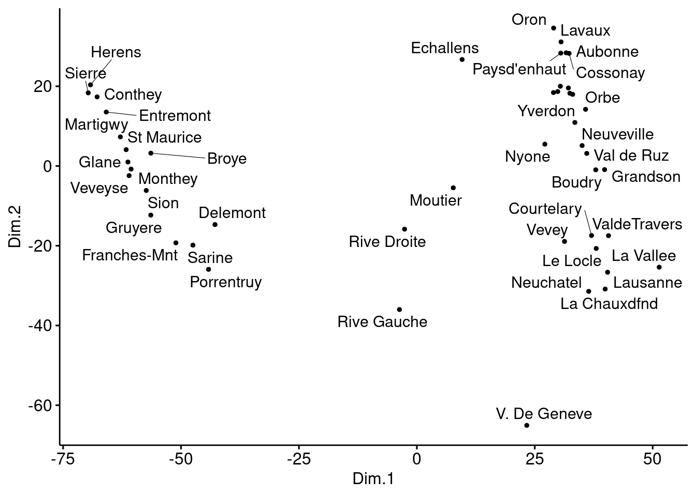
- Create \(3\) groups using \(k\)-means clustering and color points by group.
# K-means clustering
clust <- kmeans(mds, 3)$cluster %>%
as.factor()
mds <- mds %>%
mutate(groups = clust)
# Plot and color by groups
ggscatter(mds, x = "Dim.1", y = "Dim.2",
label = rownames(swiss),
color = "groups",
palette = "jco",
size = 1,
ellipse = TRUE,
ellipse.type = "convex",
repel = TRUE)## Warning: ggrepel: 6 unlabeled data points (too many overlaps). Consider increasing max.overlaps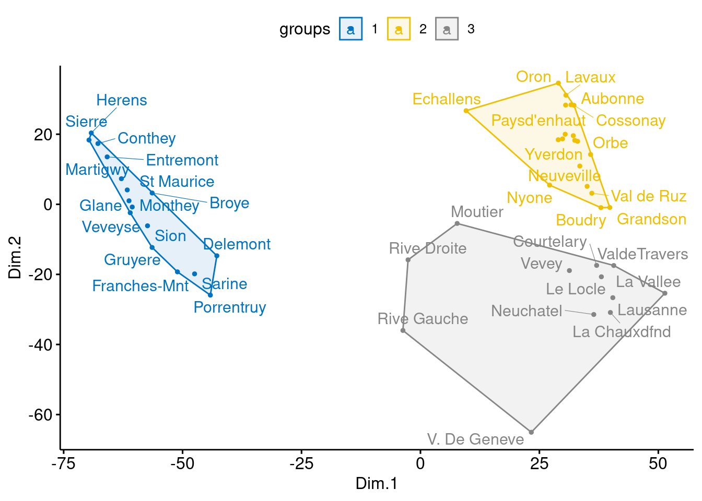
Non-metric MDS
- Perform the same analysis with both Kruskal’s non-metric MDS and Sammon’s non-linear mapping. Can you spot any differences?
Kruskal’s non-metric multidimensional scaling
# Cmpute MDS
library(MASS)
mds <- swiss %>%
dist('euclidean') %>%
isoMDS() %>%
.$points %>%
as_tibble()## initial value 5.463800
## iter 5 value 4.499103
## iter 5 value 4.495335
## iter 5 value 4.492669
## final value 4.492669
## convergedcolnames(mds) <- c("Dim.1", "Dim.2")
# Plot MDS
ggscatter(mds, x = "Dim.1", y = "Dim.2",
label = rownames(swiss),
size = 1,
repel = TRUE)## Warning: ggrepel: 6 unlabeled data points (too many overlaps). Consider increasing max.overlaps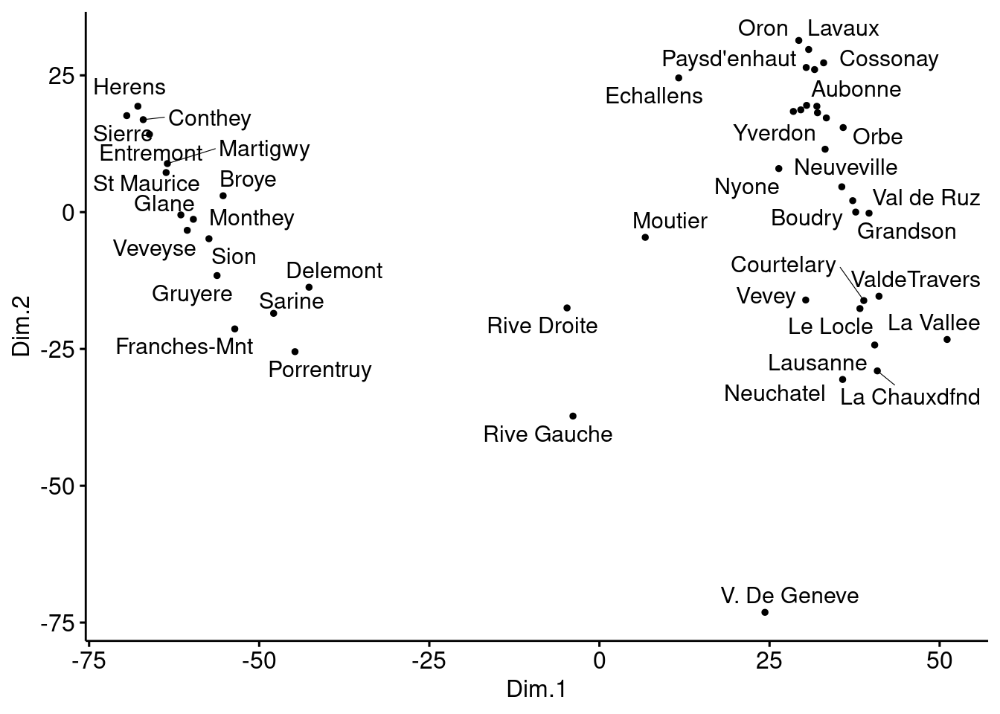
Sammon’s non-linear mapping:
# Cmpute MDS
library(MASS)
mds <- swiss %>%
dist() %>%
sammon() %>%
.$points %>%
as_tibble()## Initial stress : 0.01959
## stress after 0 iters: 0.01959colnames(mds) <- c("Dim.1", "Dim.2")
# Plot MDS
ggscatter(mds, x = "Dim.1", y = "Dim.2",
label = rownames(swiss),
size = 1,
repel = TRUE)## Warning: ggrepel: 6 unlabeled data points (too many overlaps). Consider increasing max.overlaps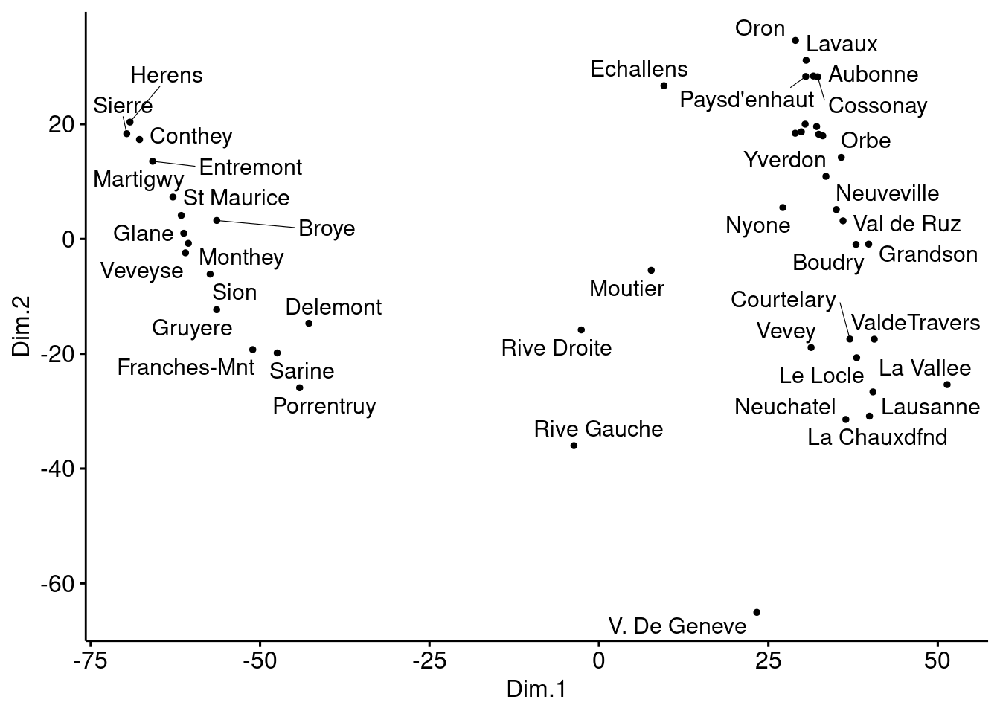
Here, there does not seem to be much difference between all methods. This is probably due to the fact that we are always using the ‘Euclidian’ distance.
Correlation matrix using Multidimensional Scaling
MDS can also be used to detect a hidden pattern in a correlation matrix.
res.cor <- cor(mtcars, method = "spearman")
res.cor## mpg cyl disp hp drat wt qsec vs am gear
## mpg 1.0000000 -0.9108013 -0.9088824 -0.8946646 0.65145546 -0.8864220 0.46693575 0.7065968 0.56200569 0.5427816
## cyl -0.9108013 1.0000000 0.9276516 0.9017909 -0.67888119 0.8577282 -0.57235095 -0.8137890 -0.52207118 -0.5643105
## disp -0.9088824 0.9276516 1.0000000 0.8510426 -0.68359210 0.8977064 -0.45978176 -0.7236643 -0.62406767 -0.5944703
## hp -0.8946646 0.9017909 0.8510426 1.0000000 -0.52012499 0.7746767 -0.66660602 -0.7515934 -0.36232756 -0.3314016
## drat 0.6514555 -0.6788812 -0.6835921 -0.5201250 1.00000000 -0.7503904 0.09186863 0.4474575 0.68657079 0.7448162
## wt -0.8864220 0.8577282 0.8977064 0.7746767 -0.75039041 1.0000000 -0.22540120 -0.5870162 -0.73771259 -0.6761284
## qsec 0.4669358 -0.5723509 -0.4597818 -0.6666060 0.09186863 -0.2254012 1.00000000 0.7915715 -0.20333211 -0.1481997
## vs 0.7065968 -0.8137890 -0.7236643 -0.7515934 0.44745745 -0.5870162 0.79157148 1.0000000 0.16834512 0.2826617
## am 0.5620057 -0.5220712 -0.6240677 -0.3623276 0.68657079 -0.7377126 -0.20333211 0.1683451 1.00000000 0.8076880
## gear 0.5427816 -0.5643105 -0.5944703 -0.3314016 0.74481617 -0.6761284 -0.14819967 0.2826617 0.80768800 1.0000000
## carb -0.6574976 0.5800680 0.5397781 0.7333794 -0.12522294 0.4998120 -0.65871814 -0.6336948 -0.06436525 0.1148870
## carb
## mpg -0.65749764
## cyl 0.58006798
## disp 0.53977806
## hp 0.73337937
## drat -0.12522294
## wt 0.49981205
## qsec -0.65871814
## vs -0.63369482
## am -0.06436525
## gear 0.11488698
## carb 1.00000000head(mtcars)## mpg cyl disp hp drat wt qsec vs am gear carb
## Mazda RX4 21.0 6 160 110 3.90 2.620 16.46 0 1 4 4
## Mazda RX4 Wag 21.0 6 160 110 3.90 2.875 17.02 0 1 4 4
## Datsun 710 22.8 4 108 93 3.85 2.320 18.61 1 1 4 1
## Hornet 4 Drive 21.4 6 258 110 3.08 3.215 19.44 1 0 3 1
## Hornet Sportabout 18.7 8 360 175 3.15 3.440 17.02 0 0 3 2
## Valiant 18.1 6 225 105 2.76 3.460 20.22 1 0 3 1- Would you say that correlation is a measure of similarity or dissimilarity? Using correlation, how would you compute distances between objects
Correlation actually measures similarity, but it is easy to transform it to a measure of dissimilarity. Distance between objects can be calculated as 1 - res.cor.
- Perform a classical MDS on the mtcars dataset and comment.
mds.cor <- (1 - res.cor) %>%
cmdscale() %>%
as_tibble()
colnames(mds.cor) <- c("Dim.1", "Dim.2")
ggscatter(mds.cor, x = "Dim.1", y = "Dim.2",
size = 1,
label = colnames(res.cor),
repel = TRUE)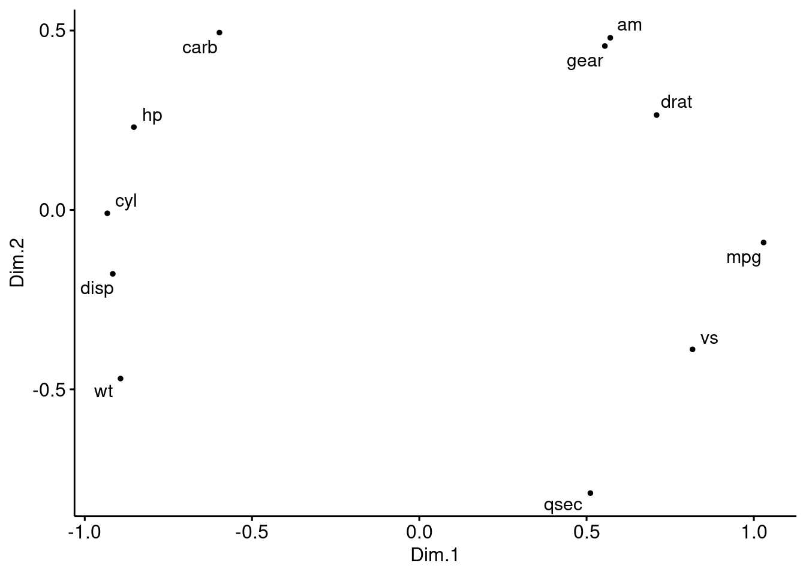 Observe here that we are performing the MDS on the variables rather on the individuals. Positive correlated objects are close together on the same side of the plot.
- Perform a PCA on the mtcars dataset. Comment on the differences with MDS. Recall what are the main differences between MDS and PCA
pca <- FactoMineR::PCA(mtcars)## Warning: ggrepel: 9 unlabeled data points (too many overlaps). Consider increasing max.overlaps 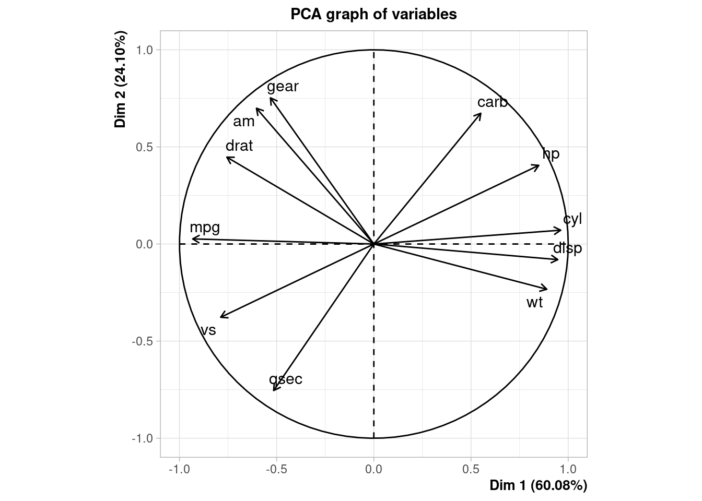
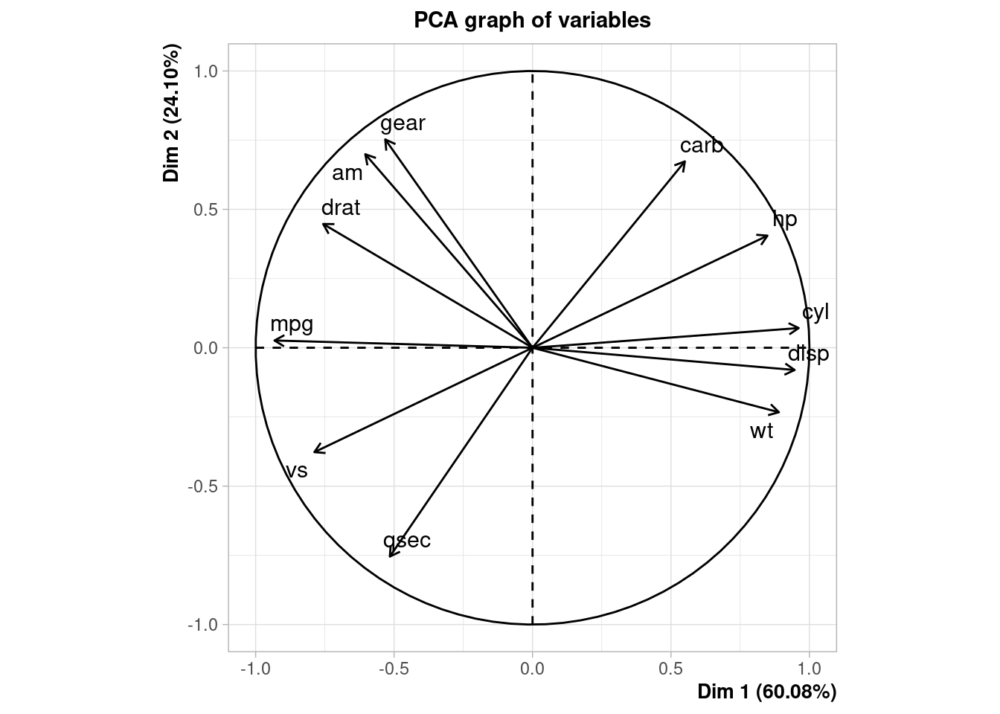
MDS and PCA are equivalent when considering classical scaling and Euclidean distances.
Mathematically and conceptually, there are close correspondences between MDS and other methods used to reduce the dimensionality of complex data, such as Principal components analysis (PCA) and factor analysis.
PCA is more focused on the dimensions themselves, and seek to maximize explained variance, whereas MDS is more focused on relations among the scaled objects.
MDS projects n-dimensional data points to a (commonly) 2-dimensional space such that similar objects in the n-dimensional space will be close together on the two dimensional plot, while PCA projects a multidimensional space to the directions of maximum variability using covariance/correlation matrix to analyze the correlation between data points and variables.
Pairwise distances between American cities
The UScitiesD dataset gives ‘straight line’ distances between \(10\) cities in the US.
?UScitiesD
cities <- UScitiesD
cities## Atlanta Chicago Denver Houston LosAngeles Miami NewYork SanFrancisco Seattle
## Chicago 587
## Denver 1212 920
## Houston 701 940 879
## LosAngeles 1936 1745 831 1374
## Miami 604 1188 1726 968 2339
## NewYork 748 713 1631 1420 2451 1092
## SanFrancisco 2139 1858 949 1645 347 2594 2571
## Seattle 2182 1737 1021 1891 959 2734 2408 678
## Washington.DC 543 597 1494 1220 2300 923 205 2442 2329Just looking at the table does not provide any information about the underlying structure of the data (i.e. the position of each city on a map). We are going to apply MDS to recover the geographical structure.
- Run the following code which displays the US map with the \(10\) cities we are considering.
names <- c("Atlanta GA", "Chicago IL", "Denver CO", "Houston TX",
"Los Angeles CA", "Miami FL", "New York NY", "San Francisco CA", "Seattle WA", "WASHINGTON DC")
df <- tibble::as_tibble(us.cities)
df <- df %>% filter(name %in% names)
usa <- map_data("usa")
gg1 <- ggplot() +
geom_polygon(data = usa, aes(x=long, y = lat, group = group), fill = "NA", color = "blue") +
coord_fixed(1.3)
labs <- data.frame(
long = df$long,
lat = df$lat,
names = df$name,
stringsAsFactors = FALSE
)
gg1 +
geom_point(data = labs, aes(x = long, y = lat), color = "black", size = 5) +
geom_point(data = labs, aes(x = long, y = lat), color = "yellow", size = 4) +
geom_text_repel(data = labs, aes(x=long , y=lat, label = names), size=3)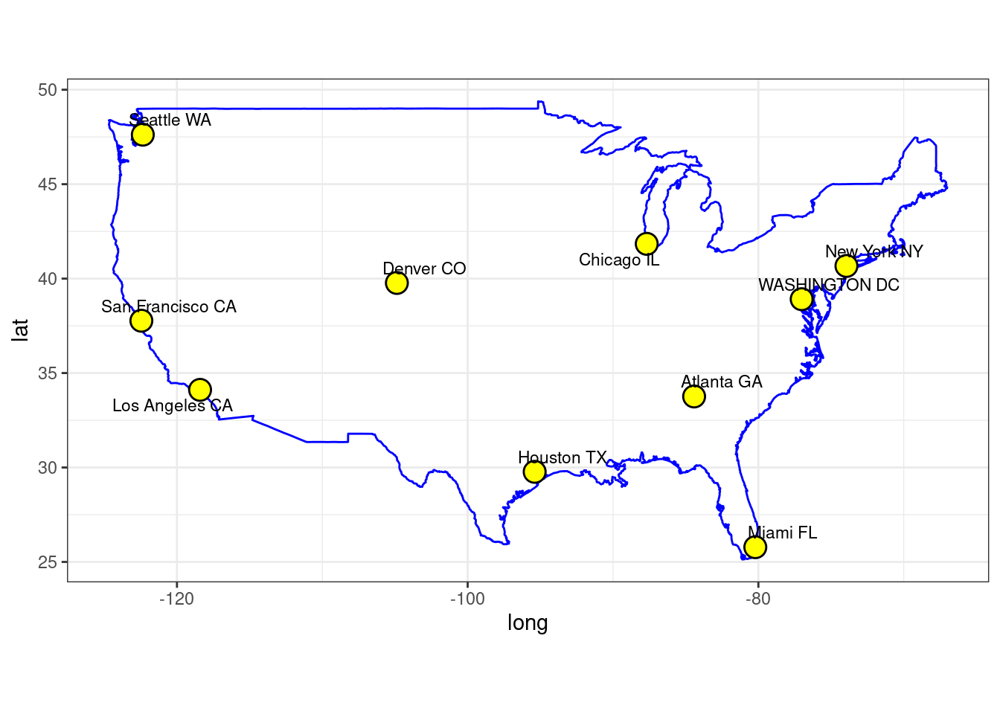
- Plot the MDS representation of the pair-wise distances for the \(10\) US cities. Comment on the results. Is this the usual US map? Does this somehow contradict the use of MDS for dimensionality reduction?
cities_mds <- cities %>%
cmdscale() %>%
scale() %>%
as_tibble()
colnames(cities_mds) <- c("Dim.1", "Dim.2")
us.cities.name <- c("Atlanta", "Chicago", "Denver", "Houston",
"LA", "Miami", "NYC", "SF", "Seattle", "DC")cities_mds_rev <- cities_mds
cities_mds_rev$Dim.1 <- -cities_mds$Dim.1
cities_mds_rev$Dim.2 <- -cities_mds$Dim.2
ggscatter(cities_mds, x = "Dim.1", y = "Dim.2",
label = us.cities.name,
size = 1,
repel = TRUE)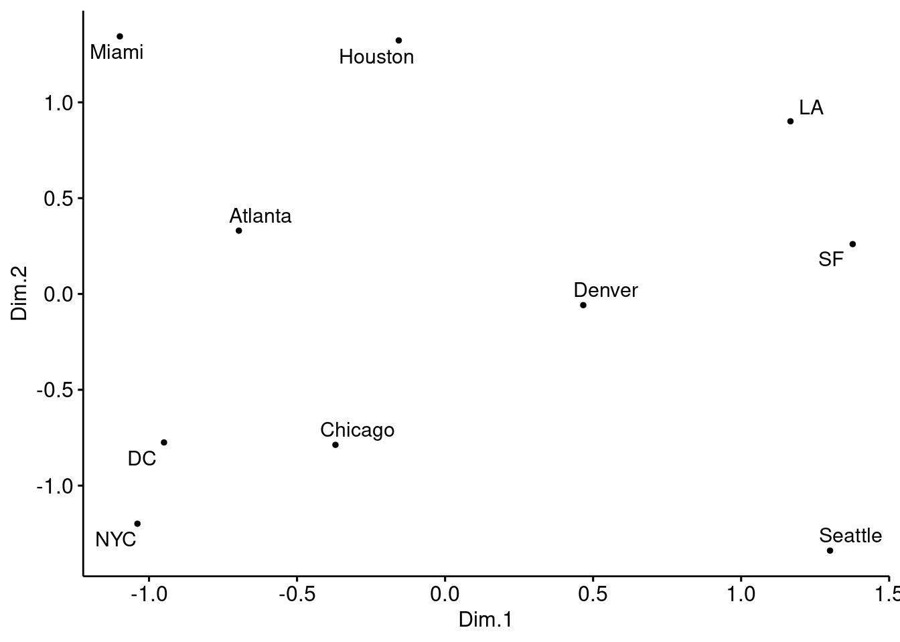
ggscatter(cities_mds_rev, x = "Dim.1", y = "Dim.2",
label = us.cities.name,
size = 1,
repel = TRUE)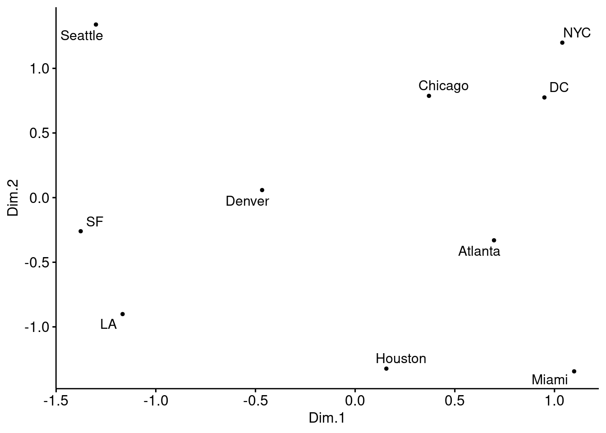
#solution 2 (with ggplot)
p <- ggplot(data = cities_mds) + geom_point(mapping = aes(x=Dim.1 , y=Dim.2), color="yellow", size=8)
p <- p + geom_text(data = cities_mds, mapping = aes(x=Dim.1 , y=Dim.2), label = us.cities.name, size=3)
p <- p + labs(title = "MDS representation of pair-wise distances of 21 European cities")
p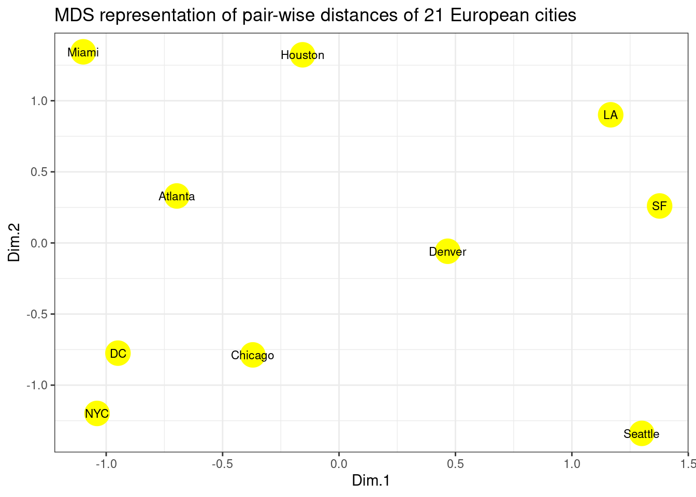
The cities on the map are not in their expected locations. It seems the map is not only mirrored, but flipped (Australia’s point of view). Indeed, this is the proper time to point to the fact that MDS only tries to preserve the inter-object distances, and therefore there is nothing wrong with the map. By operations such as rotation of the map, the distances remain intact. The map must be rotated 180 degrees. It is possible to do so by multiplying the coordinates of each point into -1.
- Solve the issue above by rotating the figure the proper way.
p <- ggplot(data = cities_mds) + geom_point(mapping = aes(x=-Dim.1 , y=-Dim.2), color="yellow", size=8)
p <- p + geom_text(data = cities_mds, mapping = aes(x=-Dim.1 , y=-Dim.2), label = us.cities.name, size=3)
p <- p + labs(title = "MDS representation of pair-wise distances of 21 European cities")
p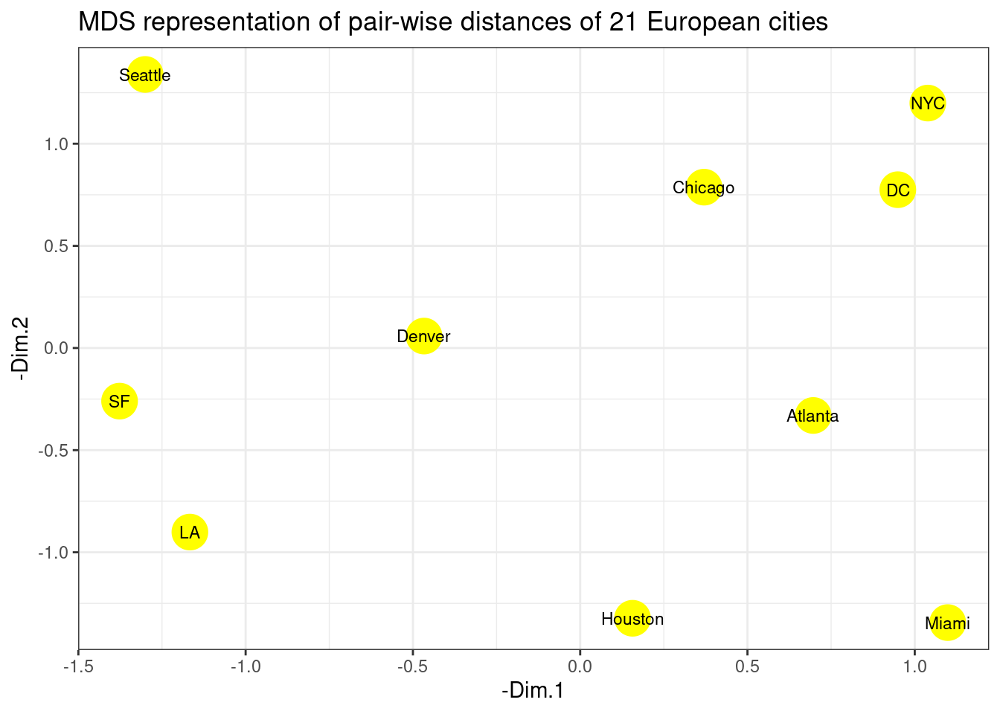
Kernel PCA
Reminders
Recall that the principal components variables \(Z\) of a data matrix \(X\) can be computed from the inner-product (gram) matrix \(K=XX^\top\). In detail, we compute the eigen-decomposition of the double-centered version of the gram matrix \[ \tilde{K} = (I-M) K (I-M) = U D^2 U^\top, \] where \(M = \frac 1n \mathbf{1}\mathbf{1}^\top\) and \(Z = UD\). Kernel PCA mimics this proceduren interpreting the kernel matrix \(\mathbf K = (K(x_i,x_{i^{'}}))_{1 \leq i,i^{'} \leq n}\) as an inner-product matrix of the implicit features \(\langle \phi(x_i), \phi(x_{i^{'}}) \rangle\) and finding its eigen vectors.
With Python using reticulate in R
library(reticulate)
reticulate::use_virtualenv("r-reticulate")
reticulate::py_config()## python: /home/jchiquet/.local/share/r-miniconda/envs/r-reticulate/bin/python
## libpython: /home/jchiquet/.local/share/r-miniconda/envs/r-reticulate/lib/libpython3.6m.so
## pythonhome: /home/jchiquet/.local/share/r-miniconda/envs/r-reticulate:/home/jchiquet/.local/share/r-miniconda/envs/r-reticulate
## version: 3.6.11 | packaged by conda-forge | (default, Aug 5 2020, 20:09:42) [GCC 7.5.0]
## numpy: /home/jchiquet/.local/share/r-miniconda/envs/r-reticulate/lib/python3.6/site-packages/numpy
## numpy_version: 1.19.1# py_install("sklearn" , pip=TRUE) # you need to install package sklearn first time
# py_install("matplotlib", pip=TRUE) # you need to install install matplotlib first timeLet us start with a simple example of the two half-moon shapes generated by the make_moons functions from sklearn_learn.
import matplotlib.pyplot as plt
from sklearn.datasets import make_moons
X, y = make_moons(n_samples=100, random_state=123)
plt.figure(figsize=(8,6))plt.scatter(X[y==0, 0], X[y==0, 1], color='red', alpha=0.5)## <matplotlib.collections.PathCollection object at 0x7f071b7d0240>plt.scatter(X[y==1, 0], X[y==1, 1], color='blue', alpha=0.5)## <matplotlib.collections.PathCollection object at 0x7f071b7d03c8>plt.title('A nonlinear 2Ddataset')## Text(0.5, 1.0, 'A nonlinear 2Ddataset')plt.ylabel('y coordinate')## Text(0, 0.5, 'y coordinate')plt.xlabel('x coordinate')## Text(0.5, 0, 'x coordinate')plt.show()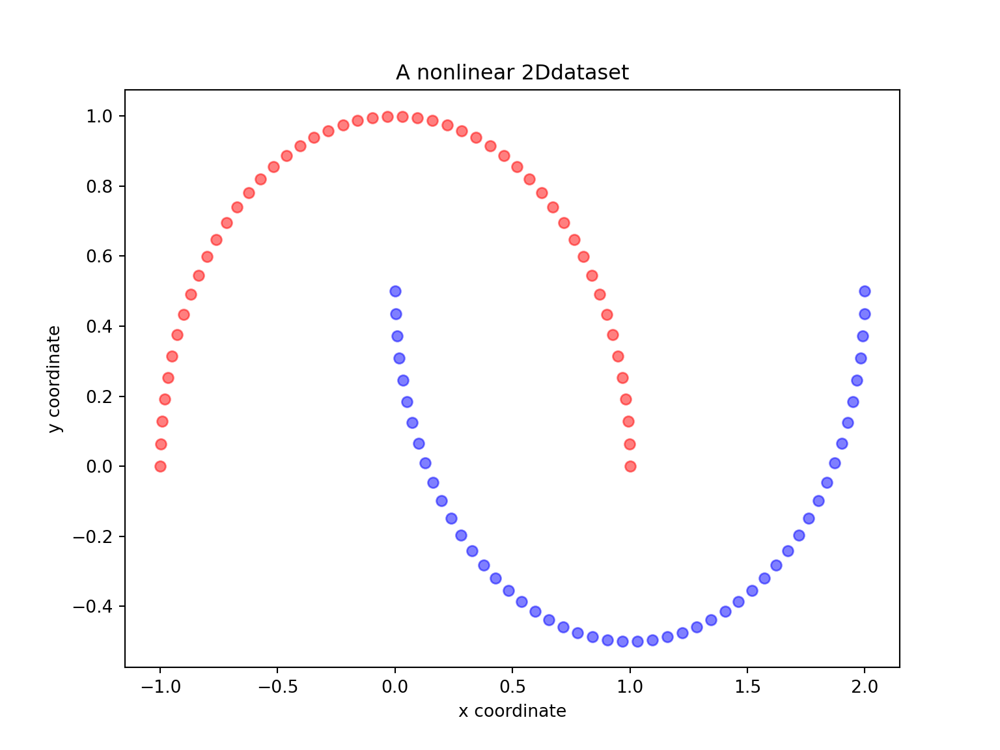
- Are the two half-moon shapes linearly separable? Do you expect PCA to give satisfactory results? Perform a PCA using sklearn with n_components \(=1\) and \(2\). Comment.
from sklearn.decomposition import PCA
import matplotlib.pyplot as plt
from sklearn.datasets import make_moons
import numpy as np
X, y = make_moons(n_samples=100, random_state=123)
#PCA with n_components = 1
scikit_pca = PCA(n_components=1)
X_spca = scikit_pca.fit_transform(X)
plt.figure(figsize=(8,6))plt.scatter(X_spca[y==0, 0], np.zeros((50,1)), color='red', alpha=0.5)## <matplotlib.collections.PathCollection object at 0x7f071b776c88>plt.scatter(X_spca[y==1, 0], np.zeros((50,1)), color='blue', alpha=0.5)## <matplotlib.collections.PathCollection object at 0x7f071ec21320>plt.title('First principal component after Linear PCA')## Text(0.5, 1.0, 'First principal component after Linear PCA')plt.xlabel('PC1')## Text(0.5, 0, 'PC1')plt.show()
#PCA with n_components = 2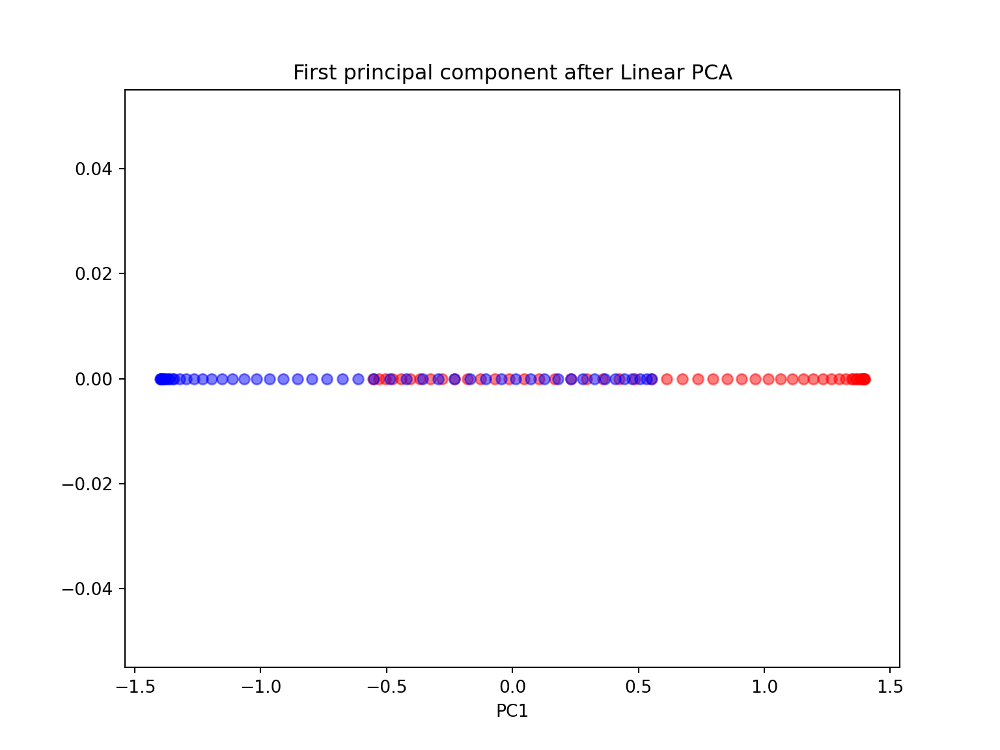
scikit_pca = PCA(n_components=2)
X_spca = scikit_pca.fit_transform(X)
plt.figure(figsize=(8,6))plt.scatter(X_spca[y==0, 0], X_spca[y==0, 1], color='red', alpha=0.5)## <matplotlib.collections.PathCollection object at 0x7f071b721978>plt.scatter(X_spca[y==1, 0], X_spca[y==1, 1], color='blue', alpha=0.5)## <matplotlib.collections.PathCollection object at 0x7f071b65c080>plt.title('First 2 principal component after Linear PCA')## Text(0.5, 1.0, 'First 2 principal component after Linear PCA')plt.xlabel('PC1')## Text(0.5, 0, 'PC1')plt.ylabel('PC2')## Text(0, 0.5, 'PC2')plt.show()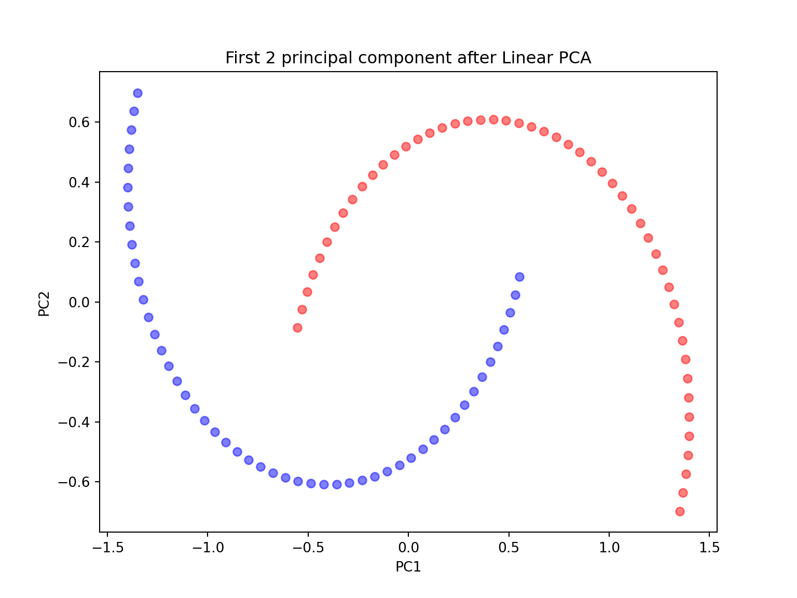
Since the two half-moon shapes are linearly inseparable, we expect the ‘classic’ PCA to fail giving us a ‘good’ representation of the data in 1D space. As we can see, the resulting principal components do not yield a subspace where the data is linearly separated well.
- Perform a KernelPCA using the KernelPCA function from sklearn with the rbf kernel and \(\gamma=15\) with both n_components \(=1\) and \(2\). Comment. Try different values for \(\gamma\) and different kernels. Comment.
from sklearn.decomposition import KernelPCA
import matplotlib.pyplot as plt
from sklearn.datasets import make_moons
import numpy as np
#kernel PCA with n_components = 1
gamma = 15
X, y = make_moons(n_samples=100, random_state=123)
X_pc = KernelPCA(gamma=15, n_components=1, kernel='rbf').fit_transform(X)
plt.figure(figsize=(8,6))plt.scatter(X_pc[y==0, 0], np.zeros((50,1)), color='red', alpha=0.5)## <matplotlib.collections.PathCollection object at 0x7f071b2deb70>plt.scatter(X_pc[y==1, 0], np.zeros((50,1)), color='blue', alpha=0.5)## <matplotlib.collections.PathCollection object at 0x7f071b2de7f0>plt.title('First principal components after RBF Kernel PCA with $\gamma$={}'.format(gamma))## Text(0.5, 1.0, 'First principal components after RBF Kernel PCA with $\\gamma$=15')plt.xlabel('PC1')## Text(0.5, 0, 'PC1')plt.show()
#kernel PCA with n_components = 2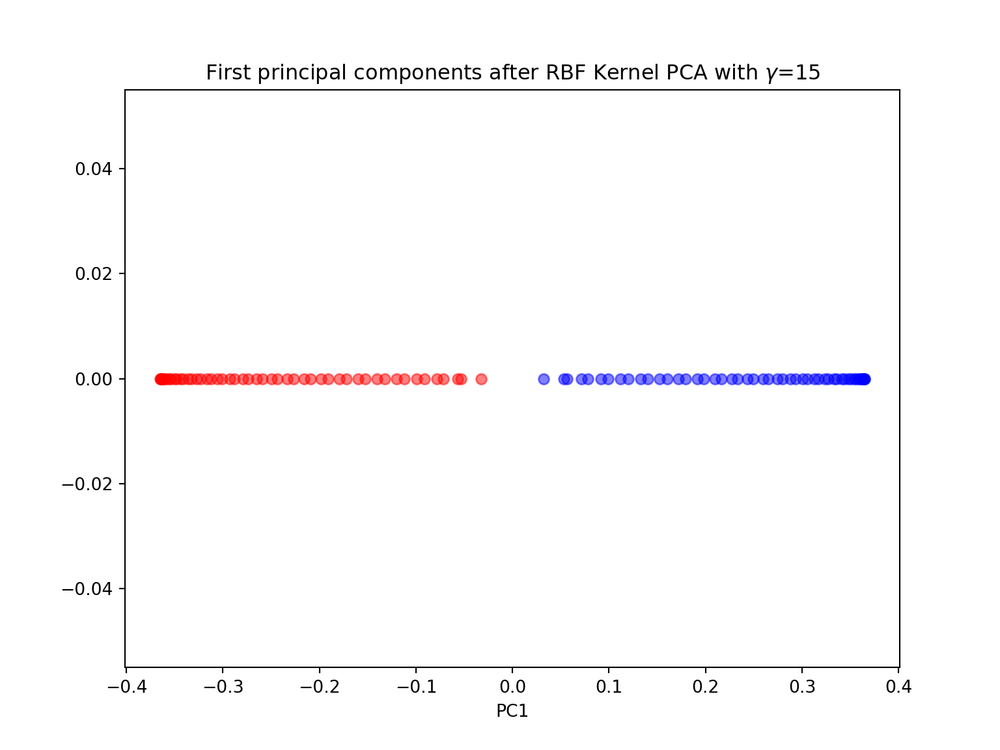
X_pc = KernelPCA(gamma=15, n_components=2, kernel='rbf').fit_transform(X)
plt.figure(figsize=(8,6))plt.scatter(X_pc[y==0, 0], X_pc[y==0, 1], color='red', alpha=0.5)## <matplotlib.collections.PathCollection object at 0x7f071b1fd0f0>plt.scatter(X_pc[y==1, 0], X_pc[y==1, 1], color='blue', alpha=0.5)## <matplotlib.collections.PathCollection object at 0x7f071b20e400>plt.title('First 2 principal components after RBF Kernel PCA with $\gamma$={}'.format(gamma))## Text(0.5, 1.0, 'First 2 principal components after RBF Kernel PCA with $\\gamma$=15')plt.xlabel('PC1')## Text(0.5, 0, 'PC1')plt.ylabel('PC2')## Text(0, 0.5, 'PC2')plt.show()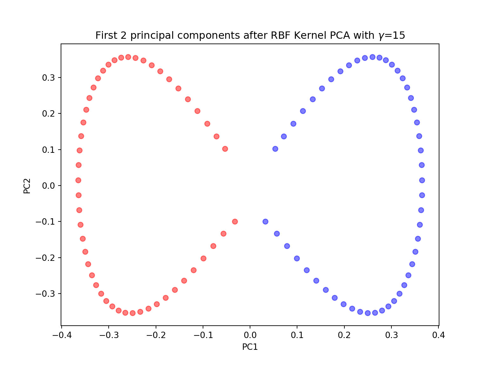
Concentric circles
Another well-known example for which linear PCA will fail is the classic case of two concentric circles with random noise: have a look at make_circles.
from sklearn.datasets import make_circles
import matplotlib.pyplot as plt
import numpy as np
X, y = make_circles(n_samples=1000, random_state=123, noise=0.1, factor=0.2)
plt.figure(figsize=(8,6))plt.scatter(X[y==0, 0], X[y==0, 1], color='red', alpha=0.5)## <matplotlib.collections.PathCollection object at 0x7f071b6e9e80>plt.scatter(X[y==1, 0], X[y==1, 1], color='blue', alpha=0.5)## <matplotlib.collections.PathCollection object at 0x7f071b6e9d68>plt.title('Concentric circles')## Text(0.5, 1.0, 'Concentric circles')plt.ylabel('y coordinate')## Text(0, 0.5, 'y coordinate')plt.xlabel('x coordinate')## Text(0.5, 0, 'x coordinate')plt.show()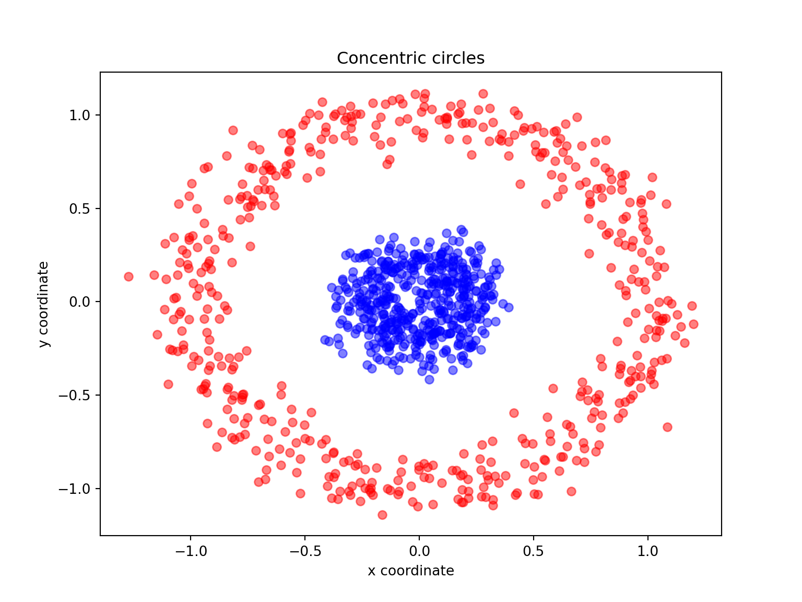
- Again, perform both a linear and kernel PCA on the make_circles dataset
from sklearn.datasets import make_circles
from sklearn.decomposition import PCA, KernelPCA
import matplotlib.pyplot as plt
import numpy as np
X, y = make_circles(n_samples=1000, random_state=123, noise=0.1, factor=0.2)
#linear PCA
scikit_pca = PCA(n_components=1)
X_spca = scikit_pca.fit_transform(X)
plt.figure(figsize=(8,6))plt.scatter(X[y==0, 0], np.zeros((500,1))+0.1, color='red', alpha=0.5)## <matplotlib.collections.PathCollection object at 0x7f071b229198>plt.scatter(X[y==1, 0], np.zeros((500,1))-0.1, color='blue', alpha=0.5)## <matplotlib.collections.PathCollection object at 0x7f071b229390>plt.ylim([-15,15])## (-15.0, 15.0)plt.title('First principal component after Linear PCA')## Text(0.5, 1.0, 'First principal component after Linear PCA')plt.xlabel('PC1')## Text(0.5, 0, 'PC1')plt.show()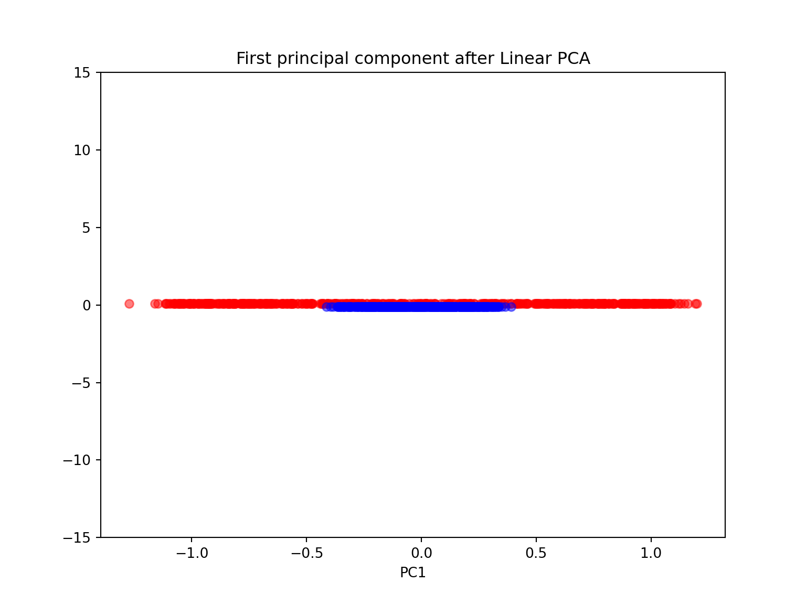
scikit_pca = PCA(n_components=2)
X_spca = scikit_pca.fit_transform(X)
plt.figure(figsize=(8,6))plt.scatter(X[y==0, 0], X[y==0, 1], color='red', alpha=0.5)## <matplotlib.collections.PathCollection object at 0x7f071b07cdd8>plt.scatter(X[y==1, 0], X[y==1, 1], color='blue', alpha=0.5)## <matplotlib.collections.PathCollection object at 0x7f071b07c7f0>plt.ylim([-15,15])## (-15.0, 15.0)plt.title('First 2 principal component after Linear PCA')## Text(0.5, 1.0, 'First 2 principal component after Linear PCA')plt.xlabel('PC1')## Text(0.5, 0, 'PC1')plt.ylabel('PC2')## Text(0, 0.5, 'PC2')plt.show()
#kernel PCA with n_components=1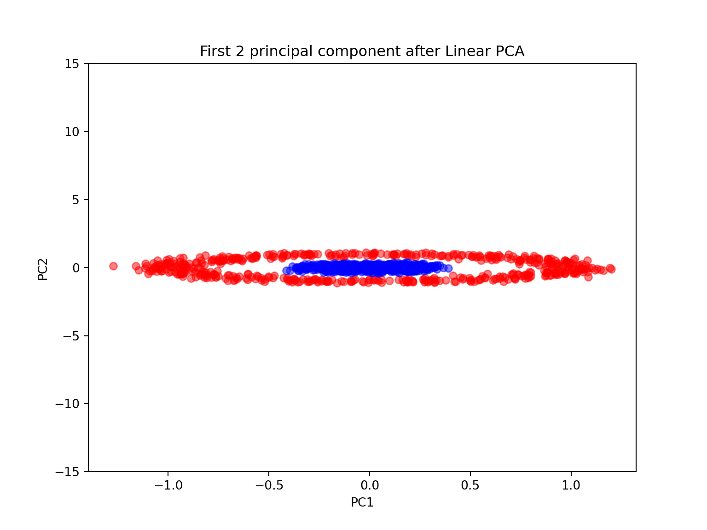
gamma = 15
X_pc = KernelPCA(gamma=15, n_components=1, kernel='rbf').fit_transform(X)
plt.figure(figsize=(8,6))plt.scatter(X_pc[y==0, 0], np.zeros((500,1)), color='red', alpha=0.5)## <matplotlib.collections.PathCollection object at 0x7f071b002d68>plt.scatter(X_pc[y==1, 0], np.zeros((500,1)), color='blue', alpha=0.5)## <matplotlib.collections.PathCollection object at 0x7f071b110e10>plt.title('First principal components after RBF Kernel PCA with $\gamma$={}'.format(gamma))## Text(0.5, 1.0, 'First principal components after RBF Kernel PCA with $\\gamma$=15')plt.xlabel('PC1')## Text(0.5, 0, 'PC1')plt.show()
#kernel PCA with n-components=2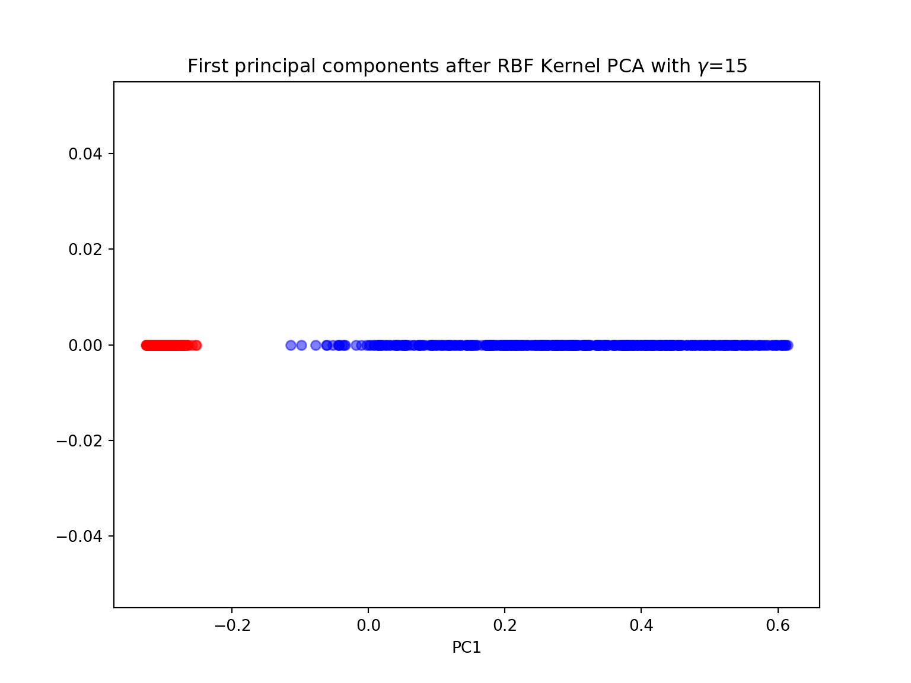
gamma = 15
X_pc = KernelPCA(gamma=gamma, n_components=2, kernel='rbf').fit_transform(X)
plt.figure(figsize=(8,6))plt.scatter(X_pc[y==0, 0], X_pc[y==0, 1], color='red', alpha=0.5)## <matplotlib.collections.PathCollection object at 0x7f071b075a90>plt.scatter(X_pc[y==1, 0], X_pc[y==1, 1], color='blue', alpha=0.5)## <matplotlib.collections.PathCollection object at 0x7f071b075fd0>plt.title('First 2 principal components after RBF Kernel PCA with $\gamma$={}'.format(gamma))## Text(0.5, 1.0, 'First 2 principal components after RBF Kernel PCA with $\\gamma$=15')plt.xlabel('PC1')## Text(0.5, 0, 'PC1')plt.ylabel('PC2')## Text(0, 0.5, 'PC2')plt.show()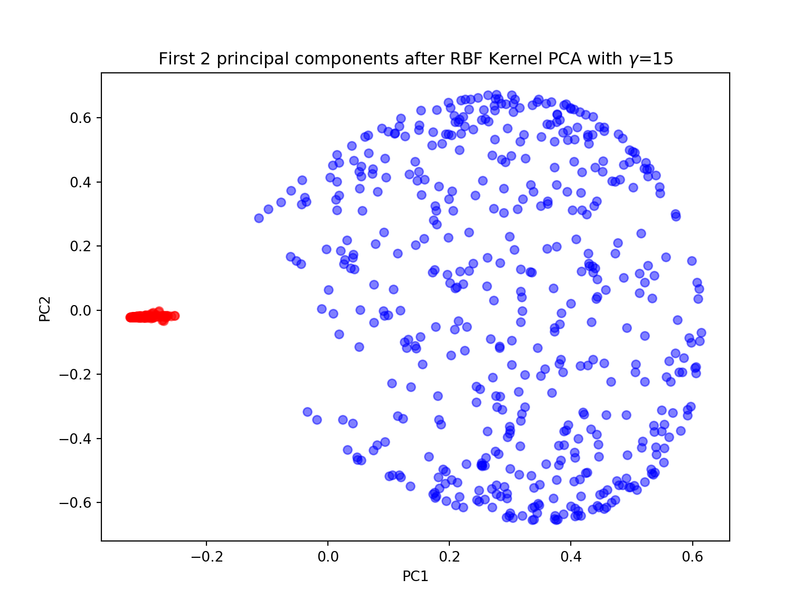
Swiss roll
Unrolling the Swiss roll is a much more challenging task (see Swiss roll).
from sklearn.datasets import make_swiss_roll
from mpl_toolkits.mplot3d import Axes3D
import matplotlib.pyplot as plt
X, color = make_swiss_roll(n_samples=800, random_state=123)
fig = plt.figure(figsize=(7,7))
ax = fig.add_subplot(111, projection='3d')
ax.scatter(X[:, 0], X[:, 1], X[:, 2], c=color, cmap=plt.cm.rainbow)## <mpl_toolkits.mplot3d.art3d.Path3DCollection object at 0x7f071b1666d8>plt.title('Swiss Roll in 3D')## Text(0.5, 0.92, 'Swiss Roll in 3D')plt.show()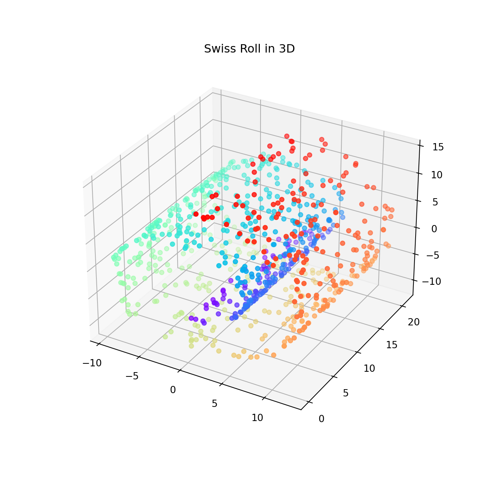
- Again, try to perform both linear and kernel PCA on the Swiss roll dataset. Try with different values of \(\gamma\). Are you satisfied with the results?
from sklearn.datasets import make_swiss_roll
from mpl_toolkits.mplot3d import Axes3D
import matplotlib.pyplot as plt
from sklearn.decomposition import KernelPCA
gamma = 0.05
X, color = make_swiss_roll(n_samples=800, random_state=123)
X_pc = KernelPCA(gamma=gamma, n_components=2, kernel='rbf').fit_transform(X)
plt.figure(figsize=(8,6))plt.scatter(X_pc[:, 0], X_pc[:, 1], c=color, cmap=plt.cm.rainbow)## <matplotlib.collections.PathCollection object at 0x7f071eccf0f0>plt.title('First 2 principal components after RBF Kernel PCA with $\gamma$={}'.format(gamma))## Text(0.5, 1.0, 'First 2 principal components after RBF Kernel PCA with $\\gamma$=0.05')plt.xlabel('PC1')## Text(0.5, 0, 'PC1')plt.ylabel('PC2')## Text(0, 0.5, 'PC2')plt.show()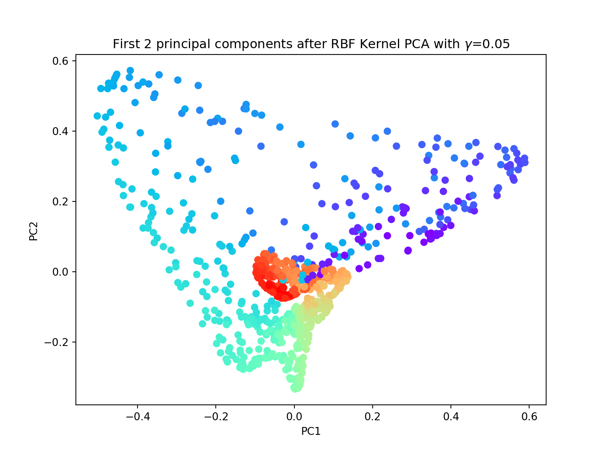
Locally Linear Embedding
In 2000, Sam T. Roweis and Lawrence K. Saul Nonlinear dimensionality reduction by locally linear embedding introduced an unsupervised learning algorithm called locally linear embedding (LLE) that is better suited to identify patterns in the high-dimensional feature space and solves our problem of nonlinear dimensionality reduction for the Swiss roll.
Locally linear embedding (LLE) seeks a lower-dimensional projection of the data which preserves distances within local neighborhoods. It can be thought of as a series of local Principal Component Analyses which are globally compared to find the best non-linear embedding.
- Using the locally_linear_embedding class, ‘unroll’ the Swiss roll both in \(1\) and \(2\) dimensions.
import numpy as np
from sklearn.datasets import make_swiss_roll
from mpl_toolkits.mplot3d import Axes3D
import matplotlib.pyplot as plt
from sklearn.manifold import locally_linear_embedding
X, color = make_swiss_roll(n_samples=800, random_state=123)
# lle with n_components = 1
X_lle, err = locally_linear_embedding(X, n_neighbors=12, n_components=1)
plt.figure(figsize=(8,6))plt.scatter(X_lle, np.zeros((800,1)), c=color, cmap=plt.cm.rainbow)## <matplotlib.collections.PathCollection object at 0x7f071b771f98>plt.title('First principal component after Locally Linear Embedding')## Text(0.5, 1.0, 'First principal component after Locally Linear Embedding')plt.show()
# lle with n_components = 2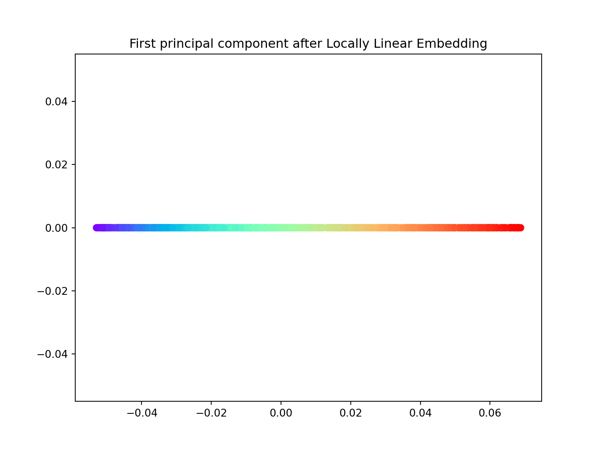
X_lle, err = locally_linear_embedding(X, n_neighbors=12, n_components=2)
plt.figure(figsize=(8,6))plt.scatter(X_lle[:,0], X_lle[:,1], c=color, cmap=plt.cm.rainbow)## <matplotlib.collections.PathCollection object at 0x7f071a8cb8d0>plt.title('First 2 principal component after Locally Linear Embedding')## Text(0.5, 1.0, 'First 2 principal component after Locally Linear Embedding')plt.show()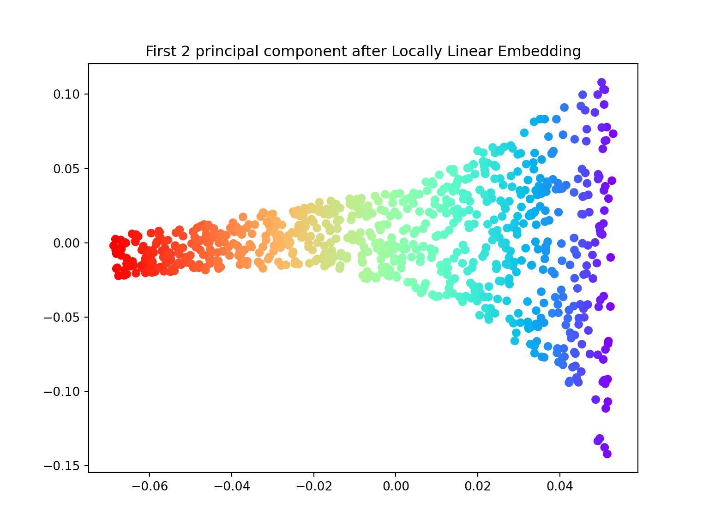